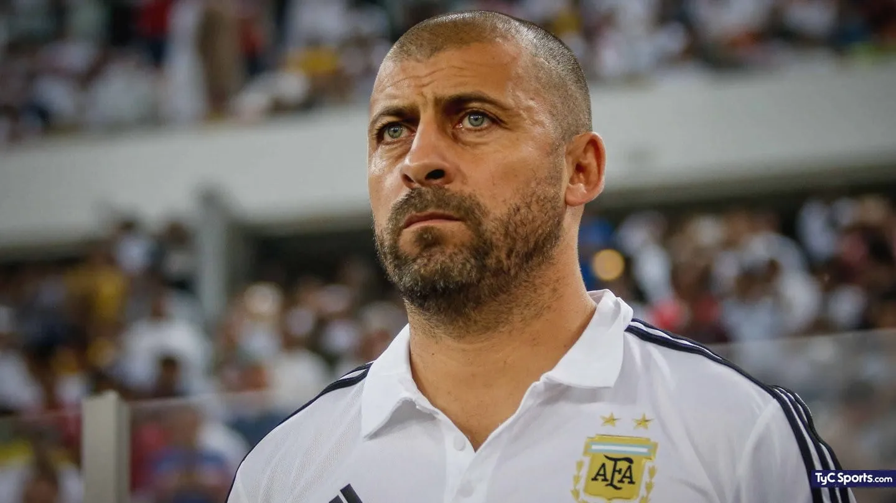
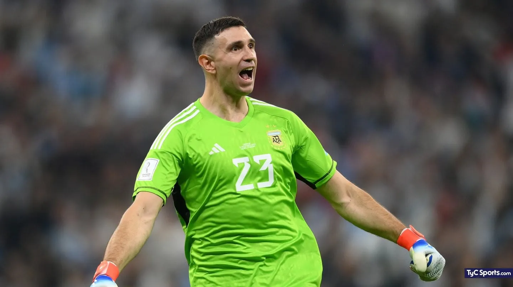

Cuerpo Técnico

Lionel Scaloni
Director Técnico, oriundo de Pujato. Uno de los ídolos del club español La Coruña.
Conoce más

Walter Samuel
Ayudante de campo. Ex jugador de Boca Junior e Inter de Milán, fue campeón de todo a nivel clubes.
Conoce másJugadores
